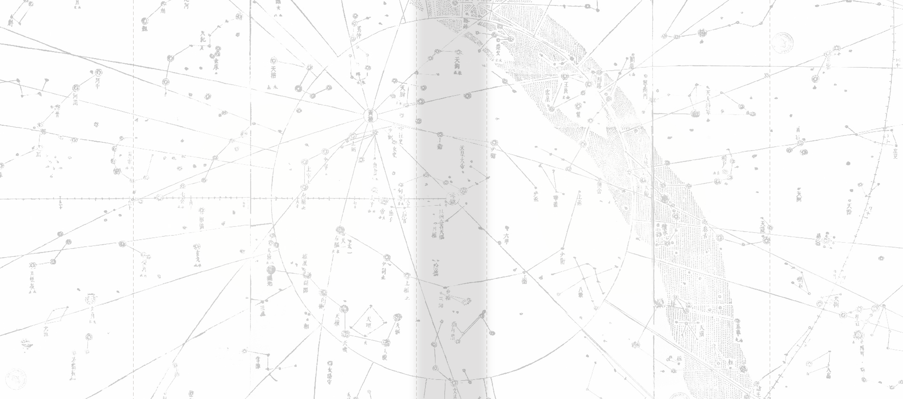
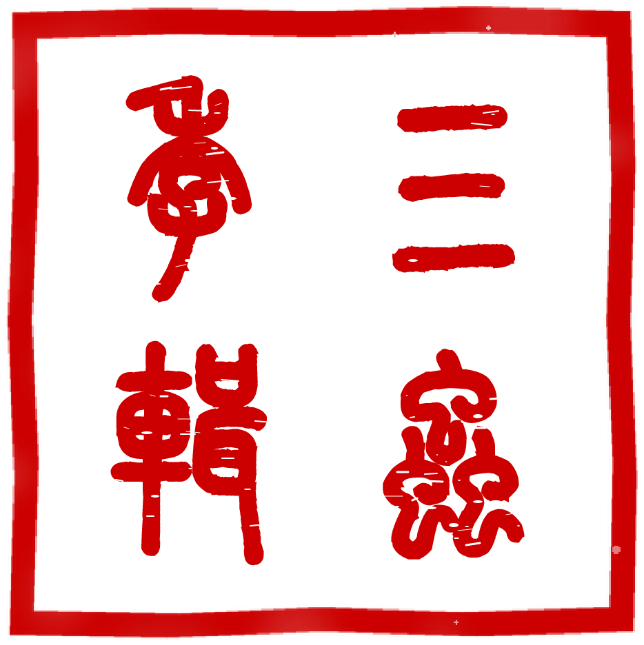

編選識
《岐伯論》五十五冊，通收四千三百九十一篇。本選以文本精研為準繩，考其概念發軔，析其論辯骨架，辨其經世分寸，精裁一百二十篇，使讀者由篇章見全貌，由問題入義理。

岐 伯 論 選 ／ 全 書 綱 領
八卷通覽
由近及遠，由下學而至上達。八卷相貫，自家庭倫常、人我進退、身心安頓與世事觀察，推至本體之思與格物之用。
卷一
本根敦倫
家庭、宗族與代際契約
卷五
度勢居貨
職場博弈與資財籌謀
卷二
陰陽合離
兩性名理與婚戀契約
卷六
觀風察變
時代思潮與世相反思
卷三
酬酢進退
人我邊界與應世防身
卷七
滌除玄覽
本體哲學與心智模型
卷四
存神調息
身心安頓與生命節律
卷八
格物鑄器
百工技藝與造物實相
岐
伯
論
選
一百二十篇
鵬城
全 息 實 存 哲 學 · 一 百 二 十 篇
岐伯論選
典 藏 精 編 本
立骨於濁世 求道於近思
歲在丙午金秋 成杰囑命編纂 · 鵬城謹製
讀法指要
切己體察，莫作看客。
順藤摸瓜，統攬脈絡。
得意忘言，貴在踐履。
篇目循八卷次第編排，宜先通讀全編以見其體，再就專題反覆涵泳以得其用。